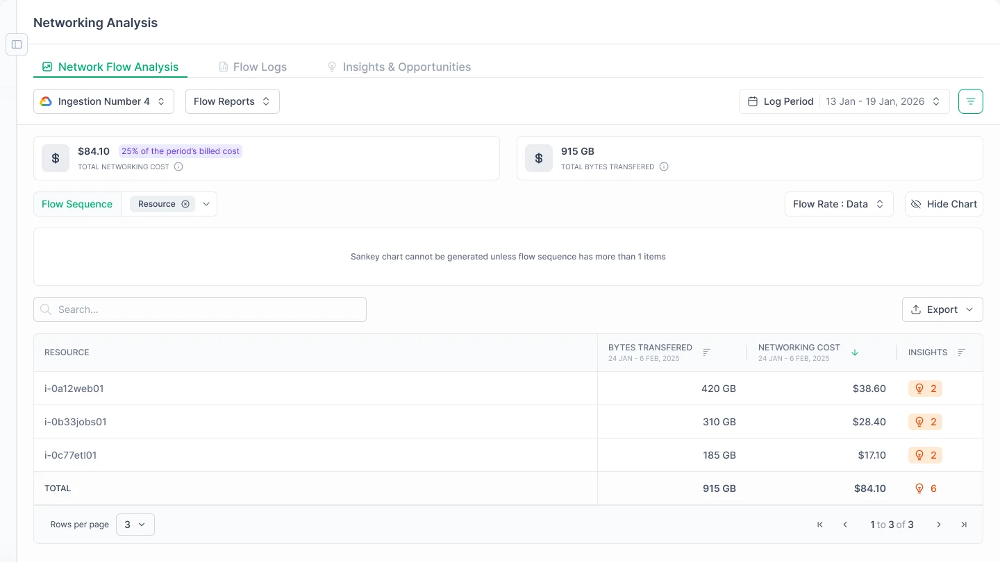
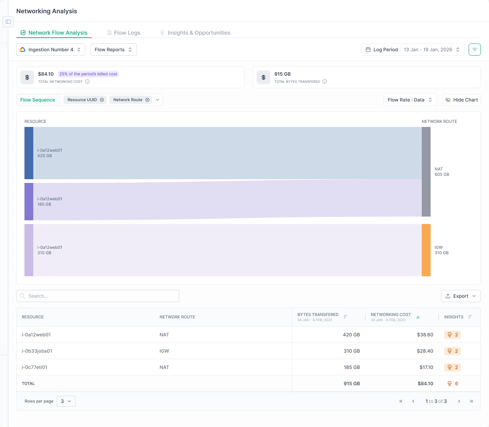
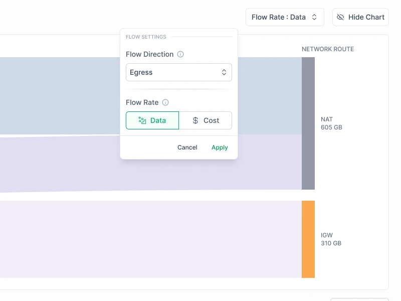
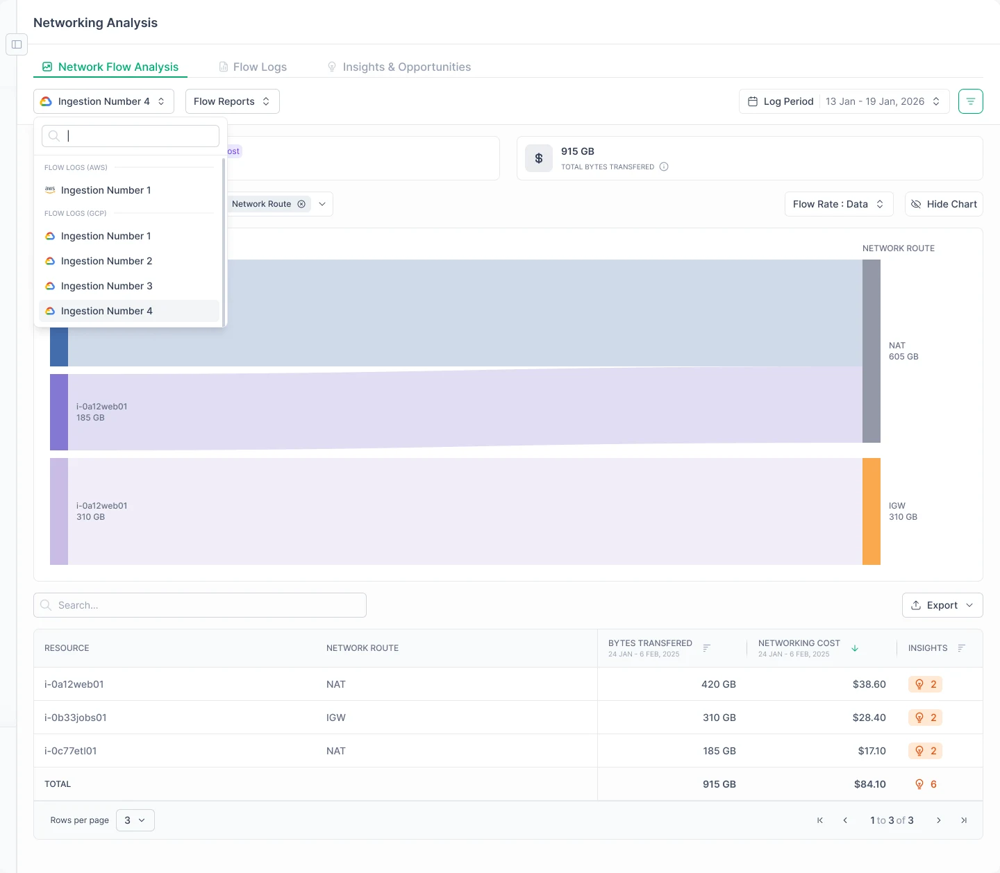
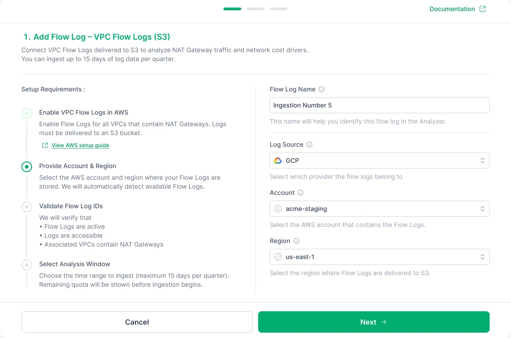
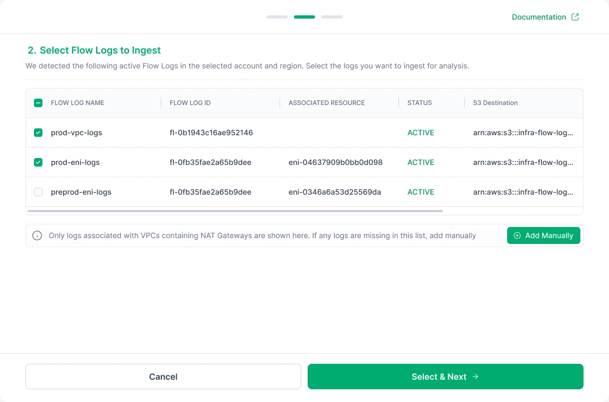
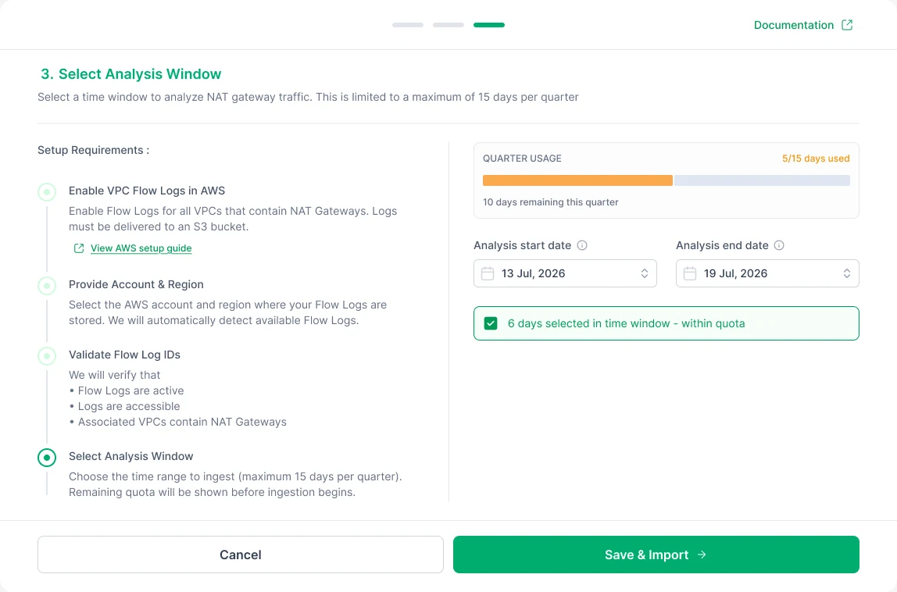
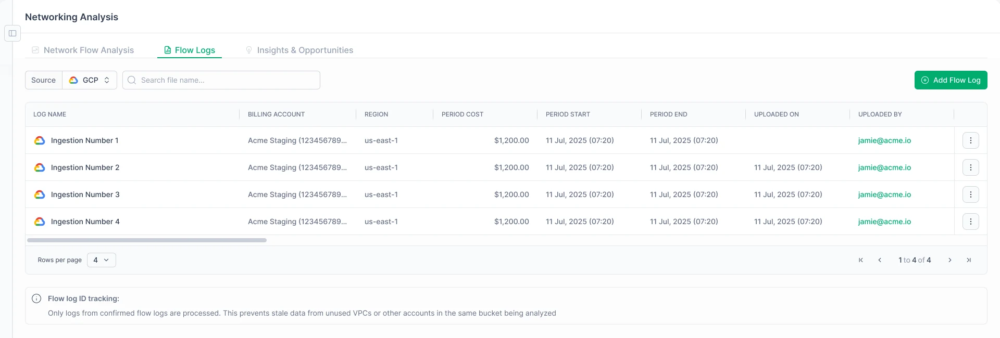

A bill shows what networking costs, not why.
Cloud networking costs are hard to understand because the activity behind them happens across many resources, services and network routes.
A bill might show how much an organisation spends on data transfer, NAT gateways or internet traffic. It doesn't explain which workloads generated that traffic, where the data travelled or what drove the expense.
I designed a networking analysis experience for OneLens that connects network activity with its cloud costs. It brings together data ingestion, traffic analysis, resource-level attribution and cost insights, so FinOps and infrastructure teams can investigate network spend with more context.
How might we help teams move from seeing networking costs as an aggregated billing figure to understanding the network activity behind those costs?
Networking costs lacked operational context.
A networking charge is usually the result of traffic moving between resources, availability zones, regions or external destinations. Understanding it means connecting financial information with infrastructure activity.
Three challenges shaped the design direction.
Limited cost attribution
Teams could see networking spend, but finding which resources contributed to it took deeper investigation.
Complex traffic relationships
Traffic spans many resources and routes, and disconnected metrics or tables make it hard to follow how data moves.
Fragmented data availability
Analysis depends on infrastructure logs that must be enabled, configured, collected and ingested first.
So the experience had to solve two connected problems: getting the right data into OneLens, and making that data useful once it was there.
Two groups, one shared question.
The experience was designed around two complementary groups, each holding half of the picture.
Financial visibility and cost accountability
- Understand networking spend across cloud environments.
- Identify resources driving high data transfer costs.
- Investigate changes in networking spend.
- Support cost allocation and optimisation.
Infrastructure visibility and traffic behaviour
- Understand how traffic moves across infrastructure.
- Identify resources and routes generating traffic.
- Configure and maintain VPC Flow Logs.
- Validate that the data is available.
FinOps teams needed the cost implications of infrastructure activity; engineers needed enough technical context to investigate the traffic behind it. The design had to make both perspectives accessible without overwhelming either audience.
Four experience goals.
Connect cost with traffic
Go beyond aggregated spend to the resources and routes behind it.
Make network relationships understandable
Show where data originates and where it travels.
Simplify data ingestion
Guide users through configuring and importing the logs analysis needs.
Provide investigation paths
Let users move from high-level cost to granular resource and network detail.
From the cost, to the traffic, to the resource.
The analysis view gives an overview of networking spend while letting users investigate the traffic underneath. It's organised into Network Flow Analysis, Flow Logs and Insights & Opportunities, so each level of investigation has its own place.
1. A financial starting point
A compact summary leads with Total Networking Cost, including its share of the period's billed cost, and Total Bytes Transferred. Users understand the financial scale and traffic volume before they go deeper.

Separate financial indicators from detailed traffic analysis. Rather than packing everything into one dense visualisation, the summary establishes the financial context first.
2. Making traffic relationships visible
A table can list records, but it's weak at showing how data moves between stages. I designed a Sankey-style flow that connects source resources, network routes and destination infrastructure, with traffic volume carried by the width of each connection.

Flow settings
Flow direction and flow rate sit in a small settings panel beside the chart. Switching the rate from data to cost redraws the same flow by spend, so users can see where traffic volume and cost diverge.

Use a flow-based visualisation to communicate relationships, not just quantities. It gives users a more intuitive way to see where significant traffic is concentrated.
3. Granular resource attribution
The flow shows the overall picture, but detailed investigation needs precision. A structured table below the chart lists each resource with its network route, bytes transferred, networking cost and insights, with a total row.
Pair visual exploration with structured data. The Sankey communicates relationships; the table supports precise inspection, comparison and finding individual resources.
4. Supporting deeper investigation
Each analysis is tied to an ingestion, and users can switch between ingestions from AWS and GCP Flow Logs without leaving the page. Flow Logs and Insights & Opportunities sit beside the analysis as their own tabs, a progression from overall spend to traffic records and potential savings.

Getting the right data in, before it's needed.
VPC Flow Logs need infrastructure-level configuration: logs must be enabled, accessible and tied to the right networking resources. I designed an onboarding flow that makes those requirements explicit and guides users through ingestion.
-

Step 1 of 3Add Flow Log
Name the ingestion and choose the source, account and region. Setup requirements stay visible alongside, with a link to the AWS setup guide.
-

Step 2 of 3Select Flow Logs
OneLens detects active Flow Logs in the account and region. Only logs for VPCs with NAT Gateways are listed, and any that are missing can be added manually.
-

Step 3 of 3Select analysis window
Pick the start and end dates while the quarter's usage stays in view: days used, days left and whether the selection fits.
1. Detecting available Flow Logs
Instead of asking users to enter every Flow Log identifier, the flow detects active logs in the selected account and region and lists their name, ID, associated resource, status and S3 destination. Manual entry covers logs that aren't detected.
Prioritise automatic discovery while keeping manual control. Listing only logs tied to VPCs with NAT Gateways keeps the selection within the supported analysis scope.
2. Making prerequisites explicit
Not everyone arrives with the infrastructure in place. Setup guidance lists what's needed outside OneLens: VPC Flow Logs enabled in AWS, logging for VPCs that contain NAT Gateways, and delivery to an S3 bucket.
Surface technical dependencies before the user reaches an ingestion failure.
3. Validating data before ingestion
Selecting a log doesn't guarantee it can be analysed. The flow checks that each Flow Log is active, that its logs are accessible and that the associated VPCs contain NAT Gateways.
Make data readiness part of onboarding, rather than treating ingestion as a simple upload.
4. Analysis-window guardrails
Log ingestion can involve large volumes of data, so analysis is limited to 15 days per quarter. While picking dates, users see the quarter's usage, the days already used and left, and the length of their selection. In the designed state, 5 of 15 days are used and a 6-day window fits within quota.
Make limits visible during configuration, not after an import fails, so users decide before they commit.
5. Ingestion transparency
A Flow Logs view lists every ingestion with its billing account, region, period cost, period start and end, and who uploaded it and when. A note makes clear that only logs from confirmed Flow Logs are processed, so stale data from unused VPCs or other accounts in the same bucket isn't analysed.

Treat ingestion history and data validity as part of the product. Users need to know not only what data exists, but what was processed and where it came from.
Balancing cost, infrastructure and configuration.
| Design challenge | Design response |
|---|---|
| Aggregated networking costs lacked context | Resource-level cost attribution |
| Traffic relationships were hard to understand | A Sankey-style flow visualisation |
| Users needed different levels of detail | High-level KPIs, visual analysis and structured tables together |
| Flow Log setup had technical dependencies | Guided onboarding with explicit prerequisites |
| Detected logs might not cover every case | Manual log addition |
| Invalid or inaccessible logs could compromise analysis | Validation checks before ingestion |
| Large ingestion windows could consume excessive resources | Quarterly analysis-window limits, shown upfront |
| Past ingestions needed traceability | An ingestion history view |
Configure, analyse, investigate.
The networking experience wasn't designed as an isolated dashboard. It connects the technical work of making data available with the financial goal of understanding networking spend.
- ConfigureIdentify, validate and import the network logs analysis needs.
- AnalyseUnderstand traffic, routes, data volumes and their costs.
- InvestigateExplore individual resources, attribution and optimisation opportunities.
Network-level cost visibility, from ingestion to insight.
The delivered designs established a structured networking analysis experience in OneLens, connecting data ingestion with network-level cost visibility.
Cost, traffic and flow
A consolidated view of networking spend and data transferred, with a Sankey flow of traffic by resource and route.
Resource-level cost
Bytes, cost and insights per resource and route, ready to compare and export.
Guided, validated Flow Logs
Discovery, prerequisites, validation, a quarterly window and a traceable ingestion history.
Understandable is more than simpler.
Making complex technical systems understandable takes more than simplifying the interface. It takes understanding the relationships between data, infrastructure, business objectives and the decisions users need to make.
The most important consideration was connecting two perspectives that are often kept apart: network behaviour and financial spend. Combining traffic visualisation, structured attribution and guided ingestion made networking costs easier to investigate within one product workflow.